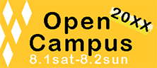

マルヒ珈琲店（架空サイト）
商店街にあるカフェ。若い層の来店者数を増やしたい。
本を店内で読むことができ、学生は格安でコーヒーを楽しめる。
製作期間：約1カ月（2020年1月～）
ターゲット：近郊に通う大学生の男女
使用言語・ソフト:HTML,css,PhotoShop,illustrator,Dreamweaver
ロゴ・バナー

2018年、中央大学文学部フランス語文学文化専攻卒業
ゼミでフランス美術を学ぶ。
卒業後、人材紹介業に従事しておりましたが、将来を考え、プログラミングを勉強したいと思い退職。フロントエンドに興味があり、現在はインターネットアカデミーでHTML,CSS,JavaScriptなどを勉強しています。
日々新しいことを学び、できるようになることに喜びを感じています。
未経験ではございますが、これからも努力を重ね、誰からも必要とされるような人に成長していきたいです。